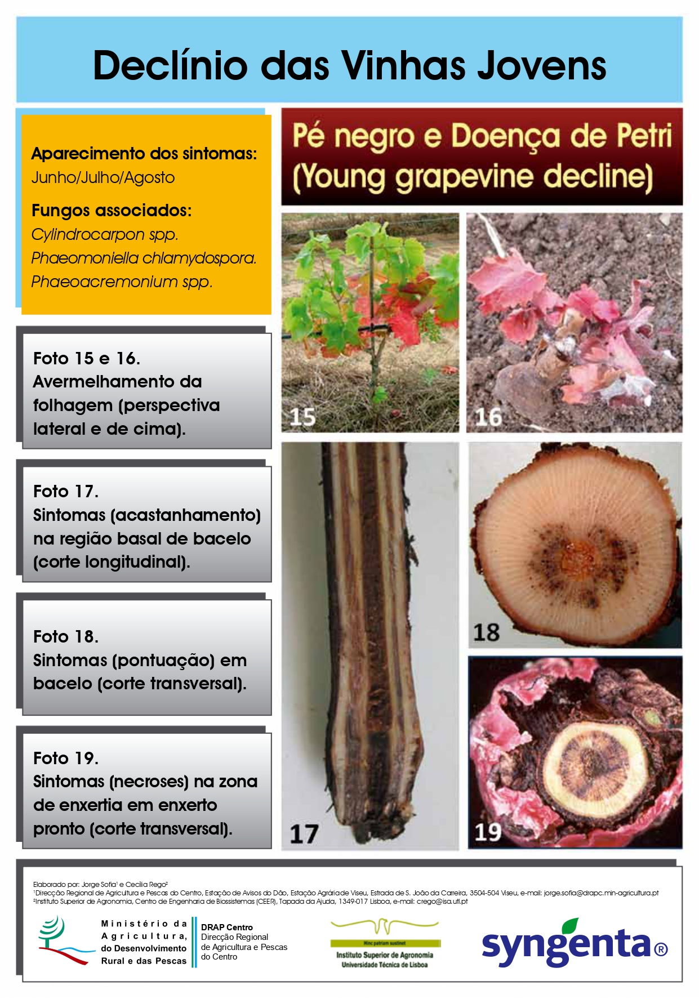
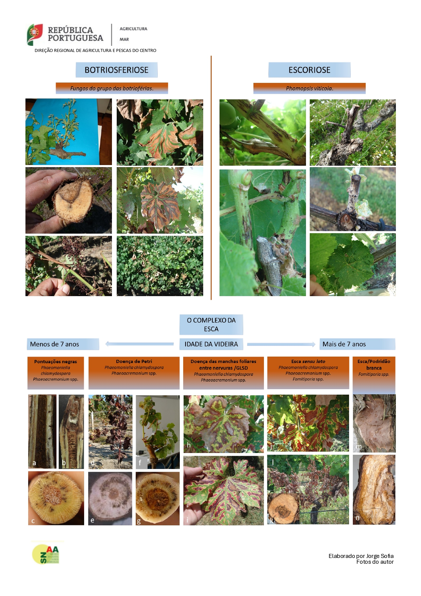
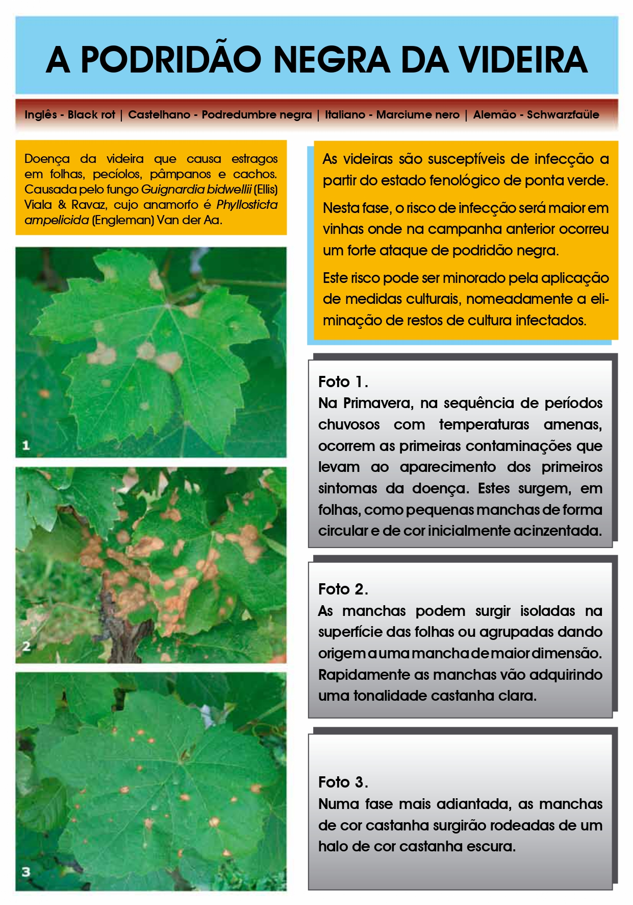
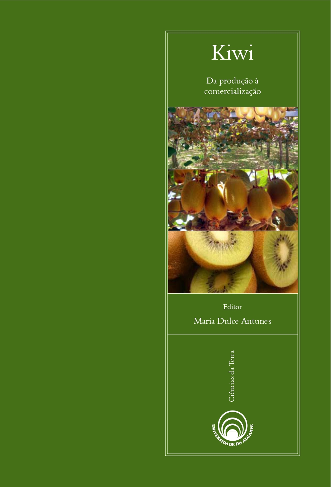

Sintomas e Descrição de Doenças do Lenho da Videira
Livro de Doenças e Pragas da Videira

Folheto de Doenças do Lenho

Síndromes de Doenças do Lenho
Black Rot

Desdobrável Black Rot

Manual do Kiwi